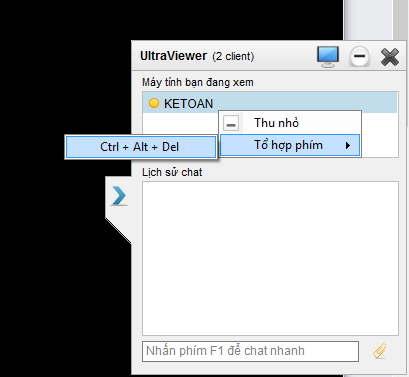
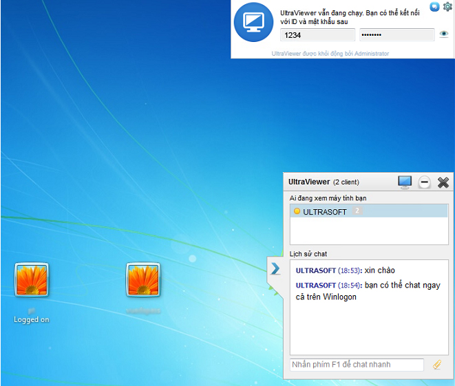
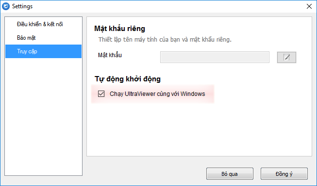
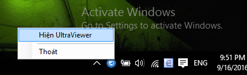
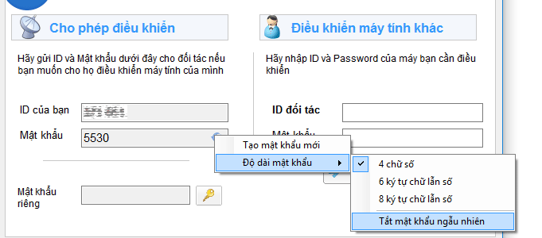
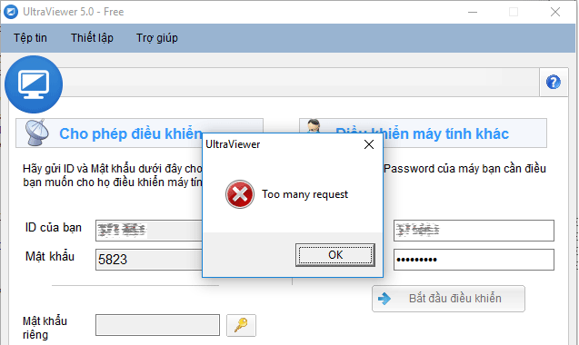

Lưu ý : Phiên bản này đang được chạy thử nghiệm. Tạm thời chúng tôi chưa áp dụng phiên bản này tại nút Download ở trang chủ. Bạn có thể tải phiên bản này tại đường link sau đây : http://ultraviewer.net/vi/UltraViewer_setup_5.1_vi.exe . Sau khi thử nghiệm trong một vài ngày tới nếu phiên bản này hoạt động tốt chúng tôi sẽ thay thế cho phiên bản 5.0.28 trên trang chủ. -- Cập nhật ngày 27/9/2016 : chúng tôi đã phát hành phiên bản 5.1.1 có sửa lại một số lỗi của phiên bản 5.1.0 ra ngày 23/9/2016. Các bạn có thể tải lại bản mới nhất bằng cách bấm vào link trên và cài đặt lại --
Sau một thời gian dài nâng cấp, test và sửa chữa. Chúng tôi đã phát hành phiên bản 5.1 với các tính năng mới như sau:
1. Gửi phím Ctrl + Alt + Del
Chúng tôi đã tích hợp thành công tính năng gửi tổ hợp phím Ctrl + Alt + Del ở phiên bản này. Các bạn có thể chuột phải vào máy tính đang xem trên khung điều khiển và chọn Tổ hợp phím > Ctrl + Alt + Del để gửi tổ hợp phím này. (Yêu cầu cả 2 máy đều sử dụng phiên bản từ 5.1 trở lên)

Gửi phím Ctrl + Alt + Del
2. Log on , log off, switch user, điều khiển và chat ngay cả trên Winlogon.
UltraViewer giờ đây đã có thể switch user, log on, log off ra vào Window để bạn có thể dễ dàng điều khiển, hỗ trợ từ xa. Bạn cũng có thể gửi tin nhắn chat qua ngay cả ở trên Winlogon. Chúng tôi đã test lại nhiều lần trên các hệ điều hành Windows 7, WIndows 8, Windows 10 - 32 bit/64 bit và bước đầu đánh giá tính năng này hoạt động ổn định. 
Điều khiển và chat trên Winlogon. Log on, log off, switch user từ xa.
3. Khởi động cùng Window
UltraViewer đã có thể khởi động (auto start) cùng với Windows. Bạn có thể vào mục Thiết lập > Truy cập và tích chọn Tự động khởi động cùng Windows. 
Khởi động cùng Windows
4. MÃ HÓA tín hiệu bằng SSL (Secure socket layer)
Tín hiệu của bạn đã giờ đây đã được mã hóa an toàn với chuẩn SSL. SSL là tiêu chuẩn công nghệ bảo mật, mã hoá tín hiệu giữa 2 máy tính. Tiêu chuẩn giúp đảm bảo rằng các dữ liệu truyền tải giữa máy tính của bạn với máy cần điều khiển được mã hóa và chống lại sự can thiệp từ yếu tố bên ngoài khác như hacker hoặc nhà mạng...
5. Thu nhỏ xuống System tray.
UltraViewer đã có chế độ lựa chọn ẩn xuống System tray nếu bạn mong muốn, như vậy bạn sẽ không lo khi bấm nhầm, UltraViewer sẽ không thoát khi bạn ấn nút (X) ở trên cùng nữa, khi bạn bấm vào nút này UltraViewer sẽ thu nhỏ xuống Taskbar. Việc này giúp đảm bảo UltraViewer không bị nhỡ tay tắt nhầm trong quá trình điều khiển, và làm gọn khay Taskbar cho các ứng dụng khác có diện tích. 
UltraViewer nằm ở khay hệ thống (System tray)
Bạn có thể cho hiện lại UltraViewer bằng cách click đúp vào biểu tượng UltraViewer ở khay hệ thống hoặc chuột phải chọn > Hiện UltraViewer.
Bạn có thể tùy chỉnh chế độ này trong mục Thiết lập > Bảo mật.
6. Reset, TẮT, thay đổi chiều dài mật khẩu ngẫu nhiên
Ở phiên bản cũ, mật khẩu ngẫu nhiên không thay đổi được khi đang chạy và chỉ có 4 chữ số, điều này rất bất tiện và kém bảo mật khi người dùng cần điều khiển máy tính của chính mình khi đi làm hoặc công tác dài ngày. 
Thay đổi, cài đặt mật khẩu ngẫu nhiên
Chúng tôi đã bổ sung tính năng cho phép thay đổi mật khẩu ngẫu nhiên thuận tiện và cho phép thay đổi chiều dài mật khẩu lên 6 -> 8 kĩ tự cả chữ lẫn số hoặc Tắt mật khẩu ngẫu nhiên để đảm bảo tính an toàn. Trường hợp người dùng cần điều khiển máy tính của chính mình để làm việc từ xa có thể đặt mật khẩu cố định và tắt mật khẩu ngẫu nhiên.
8. Chống dò mật khẩu
Để đảm bảo an toàn cho người sử dụng. Chúng tôi đã dành thời gian phát triển module chống dò mật khẩu thông minh, bảo vệ máy tính của bạn khỏi việc bị tấn công. Theo đó nếu như người dùng nhập sai mật khẩu quá nhiều lần, UltraViewer sẽ hiện thông báo tạm khóa đăng nhập vào một khoảng thời gian tăng dần tùy thuộc vào mức độ vi phạm. 
"Người nào đó" sẽ gặp phải thông báo sau nếu cố gắng dò mật khẩu của bạn
Khi thiết kế module này, chúng tôi có tính toán để hạn chế tối đa việc kẻ tấn công sử dụng sock, proxy, hay các phần mềm fake ip để dò mật khẩu.
9. Ổn định kết nối
Ở phiên bản cũ,mỗi khi chúng tôi bảo trì nâng cấp máy chủ hoặc máy chủ bị sự cố, các bạn có thể thấy hiện tượng đang điều khiển bị mất kết nối giữa chừng.
UltraViewer ở phiên bản mới có khả năng tự động tìm các máy chủ thay thế và kết nối lại trong thời gian ngắn khi bị disconnect nên giúp bản giảm thiểu các trải nghiệm không tốt trong quá trình sử dụng của mọi người.
Đồng thời, khi xảy ra hiện tượng mất kết nối và có kết nối trở lại, UltraViewer đã được lập trình để gửi tiếp các file đang gửi giở. Giúp công việc được thông suốt mà không bị gián đoạn.
10. Sửa lỗi Disconnect khi gửi file
Mỗi lỗi dai dẳng ở phiên bản cũ mà nhiều người gặp phải gây khó chịu rất lớn đó là bị disconnect khi đang gửi file sau một khoảng thời gian, nay đã được UltraViewer thanh lý.
11. Sửa lỗi bảo mật
Cám ơn ông Zamis Clark và nhóm slipstream/RoL , những chuyên gia bảo mật người Anh đã giúp chúng tôi phát hiện và thông báo lỗi bảo mật chiếm quyền Admin từ User khi đang điều khiển. Ông đã rất nhiệt tình khi viết mã lệnh mô phỏng cách thức tấn công và gửi cho chúng tôi mà không yêu cầu gì, chúng tôi thực sự rất cảm động và biết ơn.
Qua đó chúng tôi đã rà soát lại toàn bộ các vấn đề liên quan có thể xảy ra trên phần mềm và thực hiện nhiều cuộc mô phỏng, thử nghiệm tấn công chiếm quyền điều khiển. Đảm bảo UltraViewer an toàn ở mức độ cao nhất cho người sử dụng ở phiên bản UltraViewer 5.1.
12. Và nhiều chi tiết, lỗi nhỏ khác
Có rất nhiều chi tiết, lỗi vụn vặt khác đã được chúng tôi sửa lại nhưng không được liệt kê ở trên.
Do phiên bản mới ra có thể có các lỗi phát sinh chúng tôi chưa phát hiện ra, nếu bạn gặp phải lỗi gì, xin đừng ngần ngại thông báo cho chúng tôi qua email support@ultraviewer.net . Chúng tôi sẽ tiếp nhận ý kiến và cố gắng khắc phục sớm nhất có thể. Xin cám ơn các bạn!
Chia sẻ bài viết
Về tác giả
DucFabulous
UltraViewer là sản phẩm của DucFabulous Co,ltd. Chúng tôi gồm đội ngũ những kĩ sư chăm chỉ, nhiệt huyết, với khao khát sáng tạo và làm chủ công nghệ, sẽ đem đến những điều đặc biệt giá trị nhất dành cho bạn.
Chào bạn, bạn thử tham khảo hướng dẫn này của UltraViewer xem sao : http://ultraviewer.net/vi/60037-loi-cannot-create-service-va-cannot-start-ultraviewer-controller-co-the-do-yet-another-cleaner.htmlNếu vẫn không được, bạn thử cài đặt lại UtltraViewer và chuột phải vào biểu tượng UltraViewer và chọn Run as administrator xem có được không? Nếu vẫn không được bạn liên hệ email support@ultraviewer.net để UltravIewer có thể tìm hiểu rõ hơn về trường hợp của bạn. Xin cám ơn bạn!
Phần mềm điều khiển máy tính từ xa UltraViewer đã đạt cột mốc mới về lượng người sử dụng trên toàn cầu. Chúng tôi đang nỗ lực cải tiến sản phẩm không ngừng để đáp ứng nhu cầu của người sử dụng, xin đừng ngần ngại gửi ý kiến góp ý tới chúng tôi.


Cảm ơn
Reply